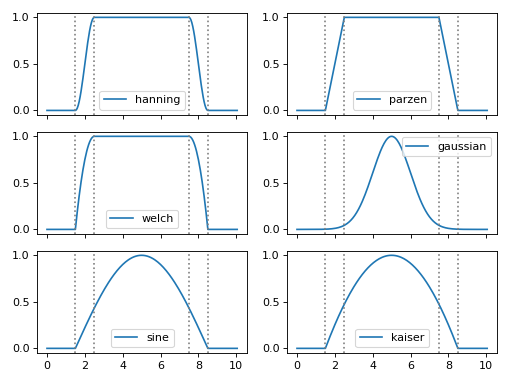
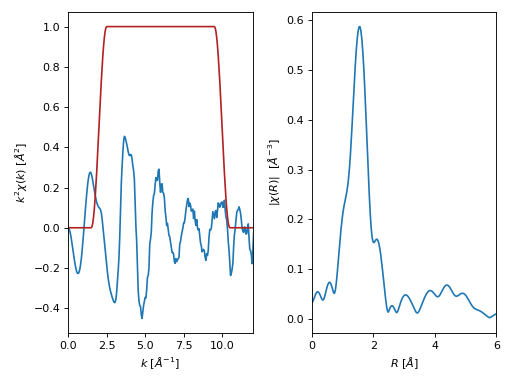
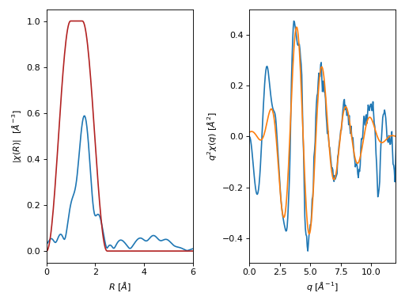
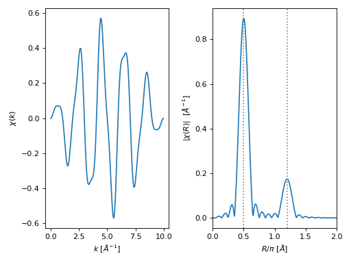
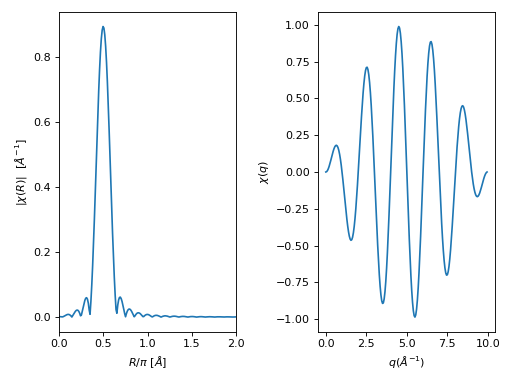

XASFT module¶
The xasft module offers the following functions to perform
discrete fast Fourier transforms (FFT) on a XAFS scan:
Function |
Description |
|---|---|
Returns a FT window. |
|
Calculates a forward FFT of a XAFS signal. |
|
Calculates a reverse FFT of a XAFS signal. |
|
Calculates a forward FFT of a preset XAFS signal. |
|
Calculates a reverse FFT of a preset XAFS signal. |
-
araucaria.xas.xasft.ftwindow(x, x_range=[- inf, inf], dx1=1, dx2=None, win='hanning')¶ Returns a FT window.
- Parameters
x (
ndarray) – Array for the FT window.x_range (
list) – Range for the FT window. The default is [-inf,inf].dx1 (
float) – First tapering parameter for FT window. The defaut is 1.dx2 (
Optional[float]) – Second tapering parameter for FT window. If None it will use the same value as dx1.win (
str) – Name of the window type. The default is ‘hanning’. See Notes for valid names.
- Return type
- Returns
1-d array with the FT window.
- Raises
ValueError – If
windowname is not recognized.
Notes
Valid window names:
‘hanning’ : cosine-squared function window.
‘parzen’ : linear function window.
‘welch’ : quadratic function window.
‘gaussian’ : Gaussian (normal) function window.
‘sine’ : sine function window.
‘kaiser’ : Kaiser-Bessel function-derived window.
Example
>>> from numpy import arange >>> import matplotlib.pyplot as plt >>> from araucaria.xas import ftwindow >>> from araucaria.plot import fig_xas_template >>> k = arange(0, 10.1, 0.05) >>> k_range = [2,8] >>> windows = ['hanning', 'parzen', 'welch', ... 'gaussian', 'sine', 'kaiser'] >>> dk = 1.0 >>> fig_kws = {'sharex' : True} >>> fig, axes = fig_xas_template(panels='ee/ee/ee', **fig_kws) >>> for i, ax in enumerate(axes.flatten()): ... win = ftwindow(k, k_range, dk, win= windows[i]) ... line = ax.plot(k, win, label=windows[i]) ... for val in k_range: ... line = ax.axvline(val - dk/2, color='gray', ls=':') ... line = ax.axvline(val + dk/2, color='gray', ls=':') ... leg = ax.legend() ... text = ax.set_ylabel('') ... text = ax.set_xlabel('') >>> fig.tight_layout() >>> plt.show(block=False)
(Source code, png, hires.png, pdf)

{kind=link}
{kind=link}
-
araucaria.xas.xasft.xftf(group, k_range=[0, 20], kweight=0, dk1=1, dk2=None, win='hanning', rmax_out=10, nfft=2048, kstep=0.05, with_phase=False, update=False)¶ Calculates a forward FFT of a XAFS signal.
A XAFS forward FFT decomposes \(\chi(k)\) into \(\chi(R)\).
- Parameters
group (
Group) – Group containing chi(k) for the forward FT.k_range (
list) – Photoelectron wavenumber range for the FT (\(Å^{-1}\)). The default is [0, 20].kweight (
int) – Exponent for weighting chi(k) by k**kweight. The default is 0.dk1 (
float) – First tapering parameter for the FT window. The detault is 1.dk2 (
Optional[float]) – Second tapering parameter for FT window. If None it will take the value of dk1.win (
str) – Name of the FT window type. The default is ‘hanning’.rmax_out (
float) – Highest R value for \(\chi(R)\) (Å). The default is 10.nfft (
int) – Array size for the FT. The default is 2048.kstep (
float) – Wavenumber step size for the FT (\(Å^{-1}\)). The default is 0.05.with_phase (
bool) – Return the phase as well as magnitude, real, and imaginary parts. The default is False.update (
bool) – Indicates if the group should be updated with the ftkf attributes. The default is False.
- Return type
- Returns
Dictionary with the following arguments:
kwin: array with the FT window.r: array with R values (Å).chir: array with \(\chi(R)\).chir_mag: array with magnitude of \(\chi(R)\).chir_re: array with real part of \(\chi(R)\).chir_im: array with imaginary part of \(\chi(R)\).chir_pha: array with phase of \(\chi(R)\). Returned ifwith_phase=True.
- Raises
TypeError – If
groupis not a valid Group instance.AttributeError – If attribute
korchidoes not exist ingroup.
Notes
If
update=Truethe contents of the returned dictionary will be included as attributes ofgroup.Example
>>> from araucaria.testdata import get_testpath >>> from araucaria import Group >>> from araucaria.io import read_dnd >>> from araucaria.xas import pre_edge, autobk, xftf >>> from araucaria.utils import check_objattrs >>> kw = 2 >>> k_range = [2,10] >>> fpath = get_testpath('dnd_testfile.dat') >>> group = read_dnd(fpath, scan='mu') # extracting mu and mu_ref scans >>> pre = pre_edge(group, update=True) >>> autbk = autobk(group, update=True) >>> fft = xftf(group, k_range=k_range, kweight=kw, update=True) >>> attrs = ['kwin', 'r', 'chir', 'chir_mag', 'chir_re', 'chir_im'] >>> check_objattrs(group, Group, attrs) [True, True, True, True, True, True]
>>> # plotting forward FFT signal >>> import matplotlib.pyplot as plt >>> from araucaria.plot import fig_xas_template >>> fig, ax = fig_xas_template(panels='er', fig_pars={'kweight':kw}) >>> line = ax[0].plot(group.k, group.k**kw*group.chi) >>> line = ax[0].plot(group.k, group.kwin, color='firebrick') >>> xlim = ax[0].set_xlim(0,12) >>> line = ax[1].plot(group.r, group.chir_mag) >>> xlim = ax[1].set_xlim(0,6) >>> fig.tight_layout() >>> plt.show(block=False)
(Source code, png, hires.png, pdf)

{kind=link}
{kind=link}
-
araucaria.xas.xasft.xftr(group, r_range=[0, 20], rweight=0, dr1=1, dr2=None, win='hanning', nfft=2048, kstep=0.05, qmax_out=20, with_phase=False, update=False)¶ Calculates a reverse FFT of a XAFS signal.
A XAFS reverse FFT recovers \(\chi(q)\) from \(\chi(R)\).
- Parameters
group (
Group) – Group containing chi(k) for the forward FT.r_range (
list) – R range for the reverse FT (Å). The default is [0, 20].rweight (
int) – Exponent for weighting chi(R) by R**rweight. The default is 0.dr1 (
float) – First tapering parameter for the reverse FT window. The default is 1.dr2 (
Optional[float]) – Second tapering parameter for reverse FT window. If None it will take the value of dr1.win – Name of the FT window type. The default is ‘hanning’.
qmax_out (
float) – Highest q value for \(\chi(R)\) ((\(Å^{-1}\))). The default is 20.nfft (
int) – Array size for the reverse FT. The default is 2048.kstep (
float) – Wavenumber step size for the reverse FT (\(Å^{-1}\)). The default is 0.05.with_phase (
bool) – Return the phase as well as magnitude, real, and imaginary parts. The default is False.update (
bool) – Indicates if the group should be updated with the ftkf attributes. The default is False.
- Return type
- Returns
Dictionary with the following arguments:
rwin: array with the reverse FT window.q: array with q values (Å).chiq: array with \(\chi(R)\).chiq_mag: array with magnitude of \(\chi(q)\).chiq_re: array with real part of \(\chi(q)\).chiq_im: array with imaginary part of \(\chi(q)\).chiq_pha: array with phase of \(\chi(q)\). Returned ifwith_phase=True.
- Raises
TypeError – If
groupis not a valid Group instance.AttributeError – If attribute
qorchirdoes not exist ingroup.
Notes
If
update=Truethe contents of the returned dictionary will be included as attributes ofgroup.Example
>>> from araucaria.testdata import get_testpath >>> from araucaria import Group >>> from araucaria.io import read_dnd >>> from araucaria.xas import pre_edge, autobk, xftf, xftr >>> from araucaria.utils import check_objattrs >>> kw = 2 >>> k_range = [2,10] >>> r_range = [0.5, 2] >>> fpath = get_testpath('dnd_testfile.dat') >>> group = read_dnd(fpath, scan='mu') # extracting mu and mu_ref scans >>> pre = pre_edge(group, update=True) >>> autbk = autobk(group, update=True) >>> fft = xftf(group, k_range=k_range, kweight=kw, update=True) >>> rft = xftr(group, r_range=r_range, update=True) >>> attrs = ['rwin', 'q', 'chiq', 'chiq_mag', 'chiq_re', 'chiq_im'] >>> check_objattrs(group, Group, attrs) [True, True, True, True, True, True]
>>> # plotting forward FFT signal >>> import matplotlib.pyplot as plt >>> from araucaria.plot import fig_xas_template >>> fig, ax = fig_xas_template(panels='rq', fig_pars={'kweight': kw}) >>> line = ax[0].plot(group.r, group.chir_mag) >>> line = ax[0].plot(group.r, group.rwin, color='firebrick') >>> xlim = ax[0].set_xlim(0,6) >>> line = ax[1].plot(group.k, group.k**kw*group.chi) >>> line = ax[1].plot(group.q, group.chiq_re) >>> xlim = ax[1].set_xlim(0,12) >>> fig.tight_layout() >>> plt.show(block=False)
(Source code, png, hires.png, pdf)

{kind=link}
{kind=link}
-
araucaria.xas.xasft.xftf_kwin(chi, nfft=2048, kstep=0.05)¶ Calculates a forward FFT of a preset XAFS signal.
- Parameters
- Return type
- Returns
Complex array of \(\chi(R)\).
Example
>>> from numpy import arange, sin, pi >>> from scipy.fftpack import fftfreq >>> from araucaria.xas import ftwindow, xftf_kwin >>> nfft = 2048 # number of points for FFT >>> ks = 0.05 # delta k (angstrom^-1) >>> f1 = 0.5 # freq1 (angstrom) >>> f2 = 1.2 # freq2 (angstrom) >>> k = arange(0, 10, ks) >>> win = ftwindow(k, x_range=(0,10), dx1=0.5, win='sine') >>> chi = 0.5*sin(2*pi*k*f1) + 0.1*sin(2*pi*k*f2) >>> chir = xftf_kwin(win*chi, nfft=nfft, kstep=ks) >>> freq = fftfreq(nfft, ks) >>> print(chir.dtype) complex128
>>> # plotting forward FFT signal >>> import matplotlib.pyplot as plt >>> from araucaria.plot import fig_xas_template >>> fig, ax = fig_xas_template(panels='er', fig_pars={'kweight':0}) >>> line = ax[0].plot(k, win*chi) >>> line = ax[1].plot(freq[:int(nfft/2)], abs(chir[:int(nfft/2)])) >>> xlim = ax[1].set_xlim(0,2) >>> xlab = ax[1].set_xlabel('$R/\pi$ [$\AA$]') >>> for f in (f1,f2): ... line = ax[1].axvline(f, color='gray', ls=':') >>> fig.tight_layout() >>> plt.show(block=False)
(Source code, png, hires.png, pdf)

{kind=link}
{kind=link}
-
araucaria.xas.xasft.xftr_kwin(chir, nfft=2048, kstep=0.05)¶ Calculates a reverse FFT of a preset XAFS signal.
- Parameters
- Return type
- Returns
Complex array for \(\chi(q)\).
Example
>>> from numpy import arange, sin, pi >>> from scipy.fftpack import fftfreq >>> from araucaria.xas import ftwindow, xftf_kwin, xftr_kwin >>> nfft = 2048 # number of points for FFT >>> ks = 0.05 # delta k (angstrom^-1) >>> f1 = 0.5 # freq1 (angstrom) >>> k = arange(0, 10, ks) >>> wink = ftwindow(k, x_range=(0,10), dx1=0.5, win='sine') >>> chi = 0.5*sin(2*pi*k*f1) >>> chir = xftf_kwin(wink*chi, nfft=nfft, kstep=ks) >>> freq = fftfreq(nfft, ks)[:nfft//2] >>> chiq = xftr_kwin(chir, nfft=nfft, kstep=ks)[:len(k)] >>> print(chiq.dtype) complex128
>>> # plotting reverse FFT signal >>> import matplotlib.pyplot as plt >>> from araucaria.plot import fig_xas_template >>> fig, ax = fig_xas_template(panels='re', fig_pars={'kweight':0}) >>> line = ax[0].plot(freq, abs(chir)) >>> xlim = ax[0].set_xlim(0,2) >>> xlab = ax[0].set_xlabel('$R/\pi$ [$\AA$]') >>> line = ax[1].plot(k, chiq) >>> text = ax[1].set_xlabel(r'$q(\AA^{-1})$') >>> text = ax[1].set_ylabel(r'$\chi(q)$') >>> fig.tight_layout() >>> plt.show(block=False)
(Source code, png, hires.png, pdf)

{kind=link}
{kind=link}